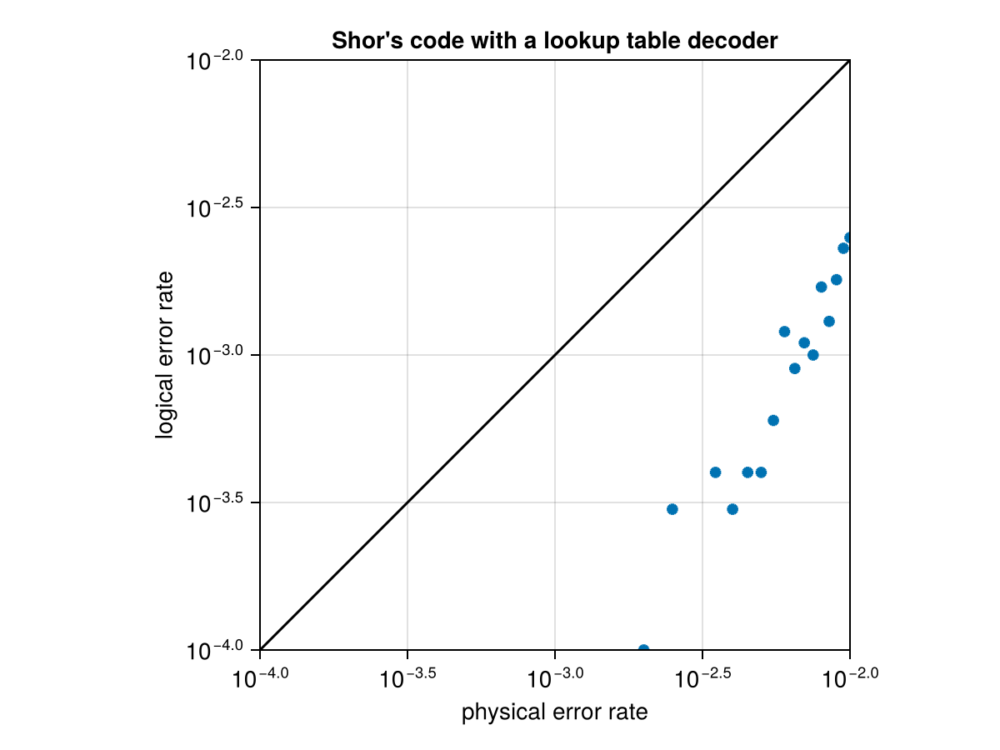
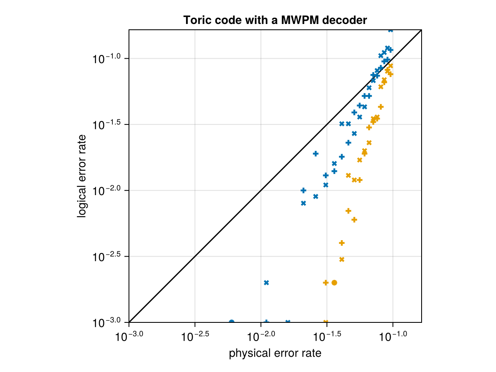

Evaluating an ECC code and decoders
While waiting for a better documentation than the small example below, consider looking into evaluate_decoder, TableDecoder, BeliefPropDecoder, PyBeliefPropDecoder, PyMatchingDecoder, CommutationCheckECCSetup, NaiveSyndromeECCSetup, ShorSyndromeECCSetup
This is a quick and durty example on how to use some of the decoders.
A function to plot the results of
using CairoMakiefunction make_decoder_figure(phys_errors, results, title="") minlim = min(minimum(phys_errors),minimum(results[results.!=0])) maxlim = min(1, max(maximum(phys_errors),maximum(results[results.!=0]))) fresults = copy(results) fresults[results.==0] .= NaN f = Figure() a = Axis(f[1,1], xscale=log10, yscale=log10, limits=(minlim,maxlim,minlim,maxlim), aspect=DataAspect(), xlabel="physical error rate", ylabel="logical error rate", title=title) lines!(a, [minlim,maxlim],[minlim,maxlim], color=:black) for (i,sresults) in enumerate(eachslice(fresults, dims=1)) scatter!(a, phys_errors, sresults[:,1], marker=:+, color=Cycled(i)) scatter!(a, phys_errors, sresults[:,2], marker=:x, color=Cycled(i)) end fendmake_decoder_figure (generic function with 2 methods)Testing out a lookup table decoder on a small code.
using QuantumCliffordusing QuantumClifford.ECCmem_errors = 0.001:0.0005:0.01codes = [Shor9()]results = zeros(length(codes), length(mem_errors), 2)for (ic, c) in pairs(codes) for (i,m) in pairs(mem_errors) setup = CommutationCheckECCSetup(m) decoder = TableDecoder(c) r = evaluate_decoder(decoder, setup, 10000) results[ic,i,:] .= r endendmake_decoder_figure(mem_errors, results, "Shor's code with a lookup table decoder")
Testing out the toric code with a decoder provided by the python package pymatching (provided in julia by the meta package PyQDecoders.jl).
import PyQDecodersmem_errors = 0.001:0.005:0.1codes = [Toric(4,4), Toric(6,6)]results = zeros(length(codes), length(mem_errors), 2)for (ic, c) in pairs(codes) for (i,m) in pairs(mem_errors) setup = ShorSyndromeECCSetup(m, 0) decoder = PyMatchingDecoder(c) r = evaluate_decoder(decoder, setup, 1000) results[ic,i,:] .= r endendmake_decoder_figure(mem_errors, results, "Toric code with a MWPM decoder")